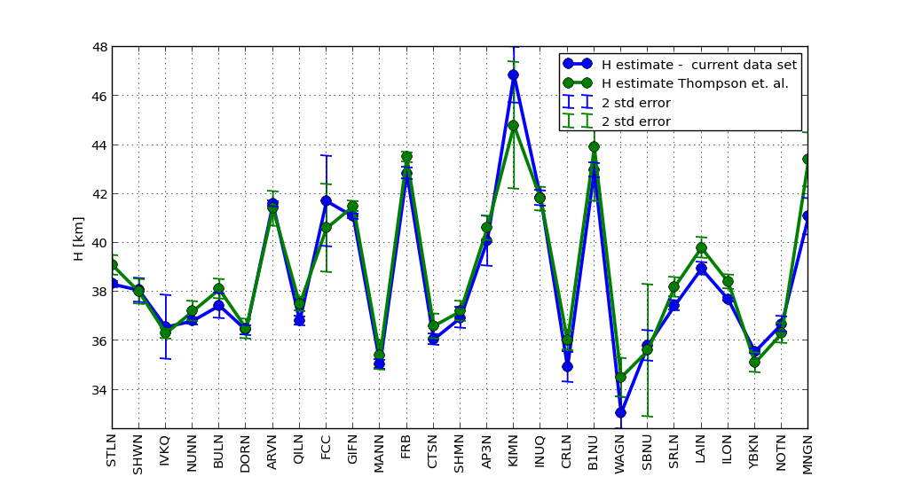
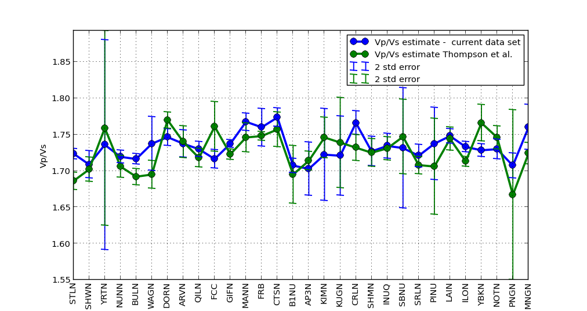
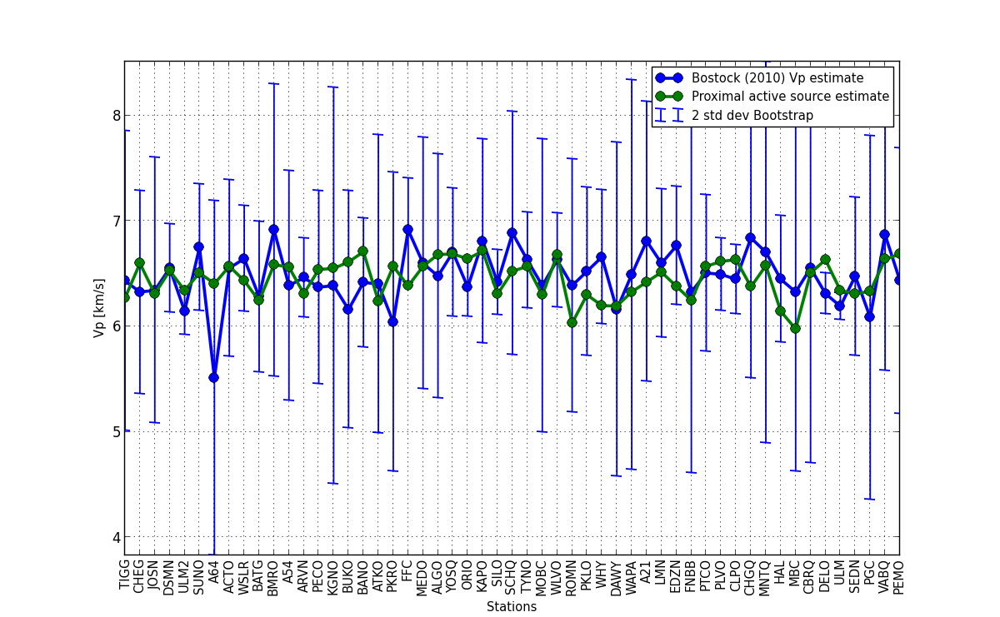

![[ ∑N S (ω )P ∗(ω ) ]
r(t) = F− 1[G(ω )] = F − 1 ∑N-n--n-----n------ ,
n Pn (ω)Pn∗(ω ) + δ](draftBP0x.png)
Abstract
Seismic studies of the Canadian continental crust predominately analyze specific geological features or regions rather than taking a comprehensive and comparative inter-regional analysis. The primary reason for this is the poor resolution afforded by the seismic networks currently and historically deployed across Canada. The Canadian continental landmass is composed of at least fifteen large geological provinces as recognized by the Geological Survey of Canada (GSC). Each of these regions is itself complex and heterogeneous and often larger than most European nations. On top of this there is poor seismic coverage, roughly one seismic station per 25,000 km2. Many of these stations are clustered near areas of geologic interest such as the Cascadia Subduction zone or population and research centres such as Southern Ontario or areas of significant resource interest like the diamondiferous Great Slave Lake area. This leaves vast areas of the Canadian landmass completely unsampled. Despite these limitations, a low resolution comprehensive and comparative study is still feasible for some of the geological regions comprising the Canadian continental crust. Direct comparison between the bulk average seismic properties of geological regions and between aggregated regions and global averages provide some new insight into the crustal composition of the Canadian landmass. The accumulated dataset also affords investigations into variations of bulk crustal parameters such as Poisson’s Ratio and crustal thickness with age and tectonic environment as well as some basic statistical data on interesting crustal features.
This paper presents a comparative tour through the dataset accumulated from processing more than a decade worth of data from all available Canadian seismic stations. It begins with a discussion of the raw data itself followed by a review of the receiver function method and a more detailed explanation of the inversion algorithms used to produce the dataset. Three previous publications utilizing similar processing schemes provide unique subsets of data to compare with the values computed in this survey for quality assurance. ...
Analysis of bulk Canadian continental crust requires estimates of crustal properties such as seismic-wave velocity and crustal thickness. This study draws on three sources for these crustal properties. The first and primary source for these estimates are data computed by processing raw seismograms into receiver functions and then inverting these RF’s for parameter estimates. The other two datasets, the statistically compiled Crust 2.0 dataset and a compilation of pre-processed active source data, are used to qualify and compare with the primary dataset.
The primary data utilized in this study are computed from teleseismic P-wave seismograms representing discrete seismic events. These events are comprised of seismic records representing more than 700 earthquake sources occuring between the years 2000 and 2012 at 343 broadband seismic stations across Canada. Seismic stations are selected from all available regional and national networks including CNSN, Polaris, FedNor and Chasme. Events are filtered by the epicentral distance from source to receiver with only the events within a 30 to 100 degree window being included. Seismic events are further filtered by hand picking those with reasonable signal to noise ratio and of sufficient impulsiveness that arrival times can be accurately measured. After selection and filtering more than 80,000 events are available for further processing.
The first stage of processing requires the transformation of teleseismic data into receiver functions. In its generic form this transformation involves deconvolving an approximation of the earthquake source from channels representing ground motion. The resulting waveform contains discrete pulses corresponding to the arrivals of S-wave energy scattered from subsurface discontinuities. Resolving these peaks is essential to the success of the following inversion, therefore it is advantageous to rotate the seismogram components to separate the P and S wave energy. This is accomplished by first rotating the N and E coordinates into radial and transverse dimensions and then performing a wave field decomposition on the radial and vertical channels [Bostock, 1998]. The direct arrival of the signal on the resulting P wave component is used as an approximation to the source function as P waves are simpler and have a response closer to that of a delta function. This windowed source coda is deconvolved from the S wave component computed from the wave field decomposition.
An L2 frequency domain deconvolution approach is used which has the advantages of computational efficiency as well as not requiring any assumptions about the noise in the data. This method performs a simultaneous deconvolution of N seismograms sharing a similar slowness to compute a single impulse response or receiver function r(t).
|
| (1) |
where F−1 is the inverse Fourier transform, S n represents the nth S wave component, Pn is the windowed P wave component, ∗ denotes the complex conjugate and δ is the regularization parameter controlling the trade off between model smoothness and data misfit. The parameter δ is chosen programatically by minimizing the general cross validation function GCV (δ) which is given by
 | (2) |
where
 | (3) |
and ωm is the mth frequency bin in the discrete Fourier transform.
All resulting receiver functions, r(t), are filtered between 0.04Hz and 3.0Hz.

A well tested and widely published method for extracting the ratio, R =  ,
where V P is P-wave velocity and V S is S-wave velocity and crustal thickness, or
depth to Moho, H, is outlined by Zhu and Kanamori [2000], hereafter ZK.
This method takes advantage of the differential arrival times between the
S-wave reflected phases Ps, PpPs PsPs, PpSs and PsSs and the direct
P-wave arrival Pp, Figure 1. Note that PsPs and PpSs have an equal
number of P and S phases, and the energy for these two phases arrive
simultaneously and are indistinguishable. For a range of slowness values, p, the
differential arrival times, t(p), trace moveout curves for each phase arrival given
by
,
where V P is P-wave velocity and V S is S-wave velocity and crustal thickness, or
depth to Moho, H, is outlined by Zhu and Kanamori [2000], hereafter ZK.
This method takes advantage of the differential arrival times between the
S-wave reflected phases Ps, PpPs PsPs, PpSs and PsSs and the direct
P-wave arrival Pp, Figure 1. Note that PsPs and PpSs have an equal
number of P and S phases, and the energy for these two phases arrive
simultaneously and are indistinguishable. For a range of slowness values, p, the
differential arrival times, t(p), trace moveout curves for each phase arrival given
by
 | (4) |
 | (5) |
 | (6) |
where pi is the slowness for the ith receiver function. Since strong reflected phases occur at sharp velocity contrasts, the Moho, the boundary targeted by ZK, tends to be well represented on most RF’s.
The travel time equations demand an apriori assumption on crustal P-wave velocity, V P , and will trade-off to some degree with crustal thickness H. For this study, each station is assigned a V P value corrisponding to the Crust 2.0 value for the 2o containing cell. In the specific cases where data is being compared to previously published results for quality control, V P values are chosen to match the values in the published study.
For a range of candidate models of R and H the RF’s are stacked along trial moveout curves. During the stacking procedure each phase is assigned a weight to account for a general trend in the quality of the phases, with direct arrival usually carrying the best signal followed by PpPs and PpSs. The weights chosen during the stacking are w1 = 0.5, w2 = 0.3 , w3 = −0.2 for the Ps, PpPs and PpSs phases respectively. A negative weight for the combined PpSs and PsPs phases is required as the polarity of the signal is reversed. Semblance weighting [Eaton, 2006] is employed to reduce the effect of spurious large amplitude noise in the data. The semblance function assigns a weight between zero (incoherent noise) and one (coherent signal). The stacking function is therefore defined as
 | (7) |
where
![[ ]
∑N ri(tj(H, R )) 2
Sj (H, R ) = -∑Ni=1--------------
i=1r2i(tj(H, R))](draftBP8x.png) | (8) |
and Sj is the semblance weight for the jth phase, time t j(H,R) is calculated from the corrisponding travel time equation and N is the number of receiver functions. Multiplying by the semblance weighting sharpens the stacked image, s(H,R), and exhibits better resolution when selecting between stacked models. The model which stacks the most coherent energy is used to provide the best estimates for the bulk crustal parameters R and H under a given seismic station.
Accompanying the processed estimates outlines above are data from controlled source experiments collected and compiled by external sources. The data was compiled by Mooney (personal communication, 2012).
Accompanying the processed estimates outlines above are data from controlled source experiments collected and compiled by external sources. The data was compiled by Mooney (personal communication, 2012).
As regional studies exist which utilize similar methods and have corresponding
parameter estimates for some of the stations used in this study it is possible to
directly compare values to those previously published. A comprehensive study in
the Hudson Bay region of the Canadian Shield (Thomson et. al., 2010) uses an
approach similar to the Zhu and Kanamori method published estimates for H
and R =  for 35 stations. 5 stations with R estimates above 1.8 are
removed due to the uncertainty surrounding these high values. There
is strong correlation of 0.95 between crustal thickness values for both
datasets (Figure 2). The velocity ratio data has a lower correlation of 0.5
(Figure 3). [Compare this value to uncertainty / deviation in the data?
].
for 35 stations. 5 stations with R estimates above 1.8 are
removed due to the uncertainty surrounding these high values. There
is strong correlation of 0.95 between crustal thickness values for both
datasets (Figure 2). The velocity ratio data has a lower correlation of 0.5
(Figure 3). [Compare this value to uncertainty / deviation in the data?
].
Directly comparing V P estimates processed with the MB algorithm is not
possible as this method has not been employed in publication. However,
comparisons can be made to active source records for experiments within close
proximity to a given seismic station (Figure 4. The correlation between
these datasets is 0.235. [This is low, explain here?]. Another method of
determining the reliability of estimates is to check the  ratio taken from the
Kanamori approach to the
ratio taken from the
Kanamori approach to the  value computed from the MB approach.
These values, working with the same data, preprocessed using the same
methods and tools should be equal. Selecting only those stations with an
error of less than +/-0.05 R, 132 stations, we get a correlation of 0.57.
Reducing the error tolerance and selecting stations with less than +/-0.01
R, leaving 31 of the cleanest stations, we get a correlation coefficient of
0.95.
value computed from the MB approach.
These values, working with the same data, preprocessed using the same
methods and tools should be equal. Selecting only those stations with an
error of less than +/-0.05 R, 132 stations, we get a correlation of 0.57.
Reducing the error tolerance and selecting stations with less than +/-0.01
R, leaving 31 of the cleanest stations, we get a correlation coefficient of
0.95.



(MAY NOT INCLUDE)
The preliminary interrogation of the data set yields the observation that the bulk Canadian Shield has lower Vp/Vs than anticipated. Previous experiments show crustal averages of 1.77 (Christensen and Mooney, 1995) and 1.78 (Zandt and Ammon, 1995). This compares to computed values of 1.73, 1.74, 1.795 for the Churchill, Superior and Grenville Provinces Vp/Vs ratios respectively.
(MIGHT NOT INCLUDE) The data bares out earlier results showing Proterozoic crust to have a higher seismic velocity ratio than Archean crust. This follows previous studies on crustal formation that have noted this trend in other regions (Durrheim and Mooney, 1991) . The increased crustal thickness of Proterozoic crust is clearly seen in the active source data while it not visible in data from processed seismic stations.
Further work on the Bostock-Kumar stacking approach is warranted from a look at the cleanest stations. Before it can be employed in large scale analysis additional denoising methods or alternative deconvolution techniques will need to be investigated to reduce the noise in the data.
¡Discussion on Slave Province¿
¡Conclusions here¿